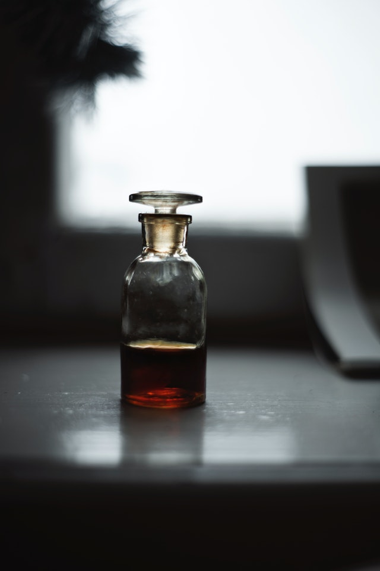

Sve je krenulo od pčela i činjenice koliko su one zaista vredne. Ne samo kao deo ekosistema naše planete već i zato što oprašuju više od 80% biljaka koje svakodnevno koristimo u ishrani. Potrebno je da neko brine i o njima, neko poput Medenka - kuće meda. Čari pčelarstva se ne ogledaju samo u materijalnim dobrima izraženim kroz porodičan rad na pčelinjaku ili proizvode koji se dobijaju od pčela, već da pčelarstvo omogućava i boravak u prirodi koji pozitivno utiče na um i telo, za razliku od užurbanog života u urbanim sredinama.
Preventivnom upotrebom propolis čuva zdravlje, ublažava tegobe u slučajevima Gripa, različitih oblika virusa, upalnih procesa Ždrela i usne šupljine.
U raznim smešama polena nađeni su sledeći vitamini: tiamin (B1), riboflavin (B2), piridoksin (B6), nikotinska kiselina, pantotenska kiselina, folna kiselina, askorobinska kiselina (C), karotin, rutin i vitamini E i D.
Matični mleč se primenjuje u medicini za lečenje bolesti i stanja koja se karakterišu kompleksnijim oštećenjem regenrativnih sposobnosti normalnog tonusa organizma.
© 2021. Medenko


 Medenko
Medenko